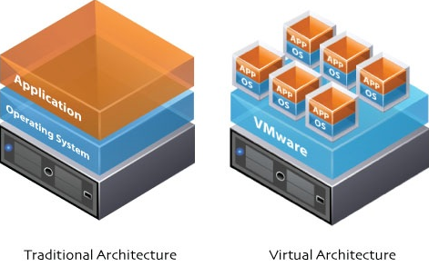

Introduction
VMware ESX is a hypervisor that partitions and consolidates systems on standard hardware. It is an efficient and flexible virtualization platform with advanced resource management capabilities. ESXi (now called VMware vSphere Hypervisor) is free; its core functionality is largely similar, but it is smaller and more secure.

Preparation
Official download: VMware vSphere Hypervisor 5.5
After you register an official account, find and note down your license key—you’ll use it to activate ESXi after installation.

This is the black “EVA-03” from the Huajiao CERT club.

On July 27 during summer break, I had to stop tinkering because of bad sectors on the hard drive. Now everything is ready and I’m continuing.
Installation
Method 1: Install via USB boot
My USB drive has Kali on it and I don’t want to mess with it for now. If you want to install via USB, you can use tools like 大白菜 / 老毛桃 / anywlan to make a bootable drive and then use it to install the ISO. Or you can write the ISO to the USB drive with UltraISO (make sure you back up your data first).
Method 2: Install via PXE boot
You’ll need this tool: ESXiPXE, which requires .NET 4.0.
Extract it, then create a new folder inside it—let’s call it “esxi”.

Copy the files from the ISO image into the esxi folder. Then create a new folder inside esxi named pxelinux.cfg.

Copy ./esxi/ISOLINUX.CFG into pxelinux.cfg, and rename it to default.

After that, find ESXiPXE.exe.config in the root directory and open it with a text editor.
Configure the DHCP service; the key field is ServerIp. 172.16.85.177 is my laptop’s IP.

Keep the parameters below as default (same as in the screenshot).

Next, run ESXiPXE.exe. It will ask whether to allow network access—choose Allow.
Then power on the No. 3 machine and boot from network. You’ll see the pxelinux menu.

ESXiPXE.exe will show something like this:

Next comes the installation process:

In this screenshot you can see the memory is only 4 GB—this is also the cause of the error later.


Disk scanning takes about a dozen seconds. If it takes more than a minute, the disk likely has issues—this is what happened during summer break, and it would always get stuck at 29%.

Select English.

Set the administrator password.

Here it failed, saying there isn’t enough memory. This machine has 24 GB, so I reseated the RAM sticks.

After a few minutes of reseating (plugging/unplugging), you can see the memory capacity is back.

Reinstall.

Installation complete!

 CC BY-NC-SA 4.0
CC BY-NC-SA 4.0